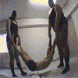

54 · 21 · 6 시간 전 · 원문
당신의 용기에 박수를
수집 당시 댓글 21개
악덕팬더 · 7 시간 전
MZ면정학 · 7 시간 전
오랑우탄 · 6 시간 전
아 기대하고 들어왔는데 좆같네
시트룰린 · 6 시간 전
지랄말고 배리나 가져와
↳ 답글 · 스탈린 · 5 시간 전

↳ 답글 · 미츠루기 · 5 시간 전
예…?
르미나루 · 6 시간 전
매젓이라 ㅠㅠ
↳ 답글 · 프로키자니아 · 1 시간 전
루기 · 6 시간 전
배리나 인기많네
마리야 · 6 시간 전
만두가조아 · 6 시간 전
아흐..
Santa · 6 시간 전
러브엔피스 · 6 시간 전
겨나 가슴밑에 땀자국이 있어야 완벽인데.
붐업단2 · 5 시간 전
저렇게 가린건 별로
휘유우우우 · 5 시간 전
와
풓풓풓 · 4 시간 전
슬슬 하는구나
스파르타쿠스 · 4 시간 전
어흐
나부 · 1 시간 전
땀자국이 없네...
llliliII · 50 분 전
단디쎄리라 · 40 분 전
ㅇㄷ
9700k · 30 분 전
(^-^)/
댓글
수집 당시 댓글 21개
악덕팬더 · 7 시간 전
MZ면정학 · 7 시간 전
오랑우탄 · 6 시간 전
아 기대하고 들어왔는데 좆같네
시트룰린 · 6 시간 전
지랄말고 배리나 가져와
· 스탈린 · 5 시간 전

· 미츠루기 · 5 시간 전
예…?
르미나루 · 6 시간 전
매젓이라 ㅠㅠ
· 프로키자니아 · 1 시간 전
루기 · 6 시간 전
배리나 인기많네
마리야 · 6 시간 전
만두가조아 · 6 시간 전
아흐..
Santa · 6 시간 전
러브엔피스 · 6 시간 전
겨나 가슴밑에 땀자국이 있어야 완벽인데.
붐업단2 · 5 시간 전
저렇게 가린건 별로
휘유우우우 · 5 시간 전
와
풓풓풓 · 4 시간 전
슬슬 하는구나
스파르타쿠스 · 4 시간 전
어흐
나부 · 1 시간 전
땀자국이 없네...
llliliII · 50 분 전
와
단디쎄리라 · 40 분 전
ㅇㄷ
9700k · 30 분 전
(^-^)/